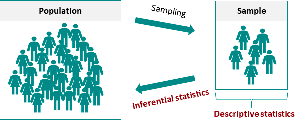
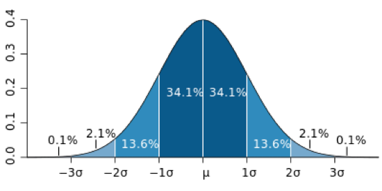
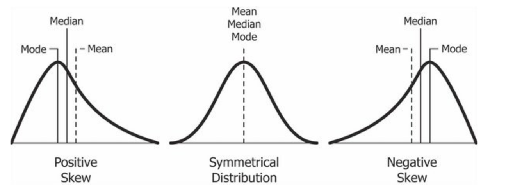
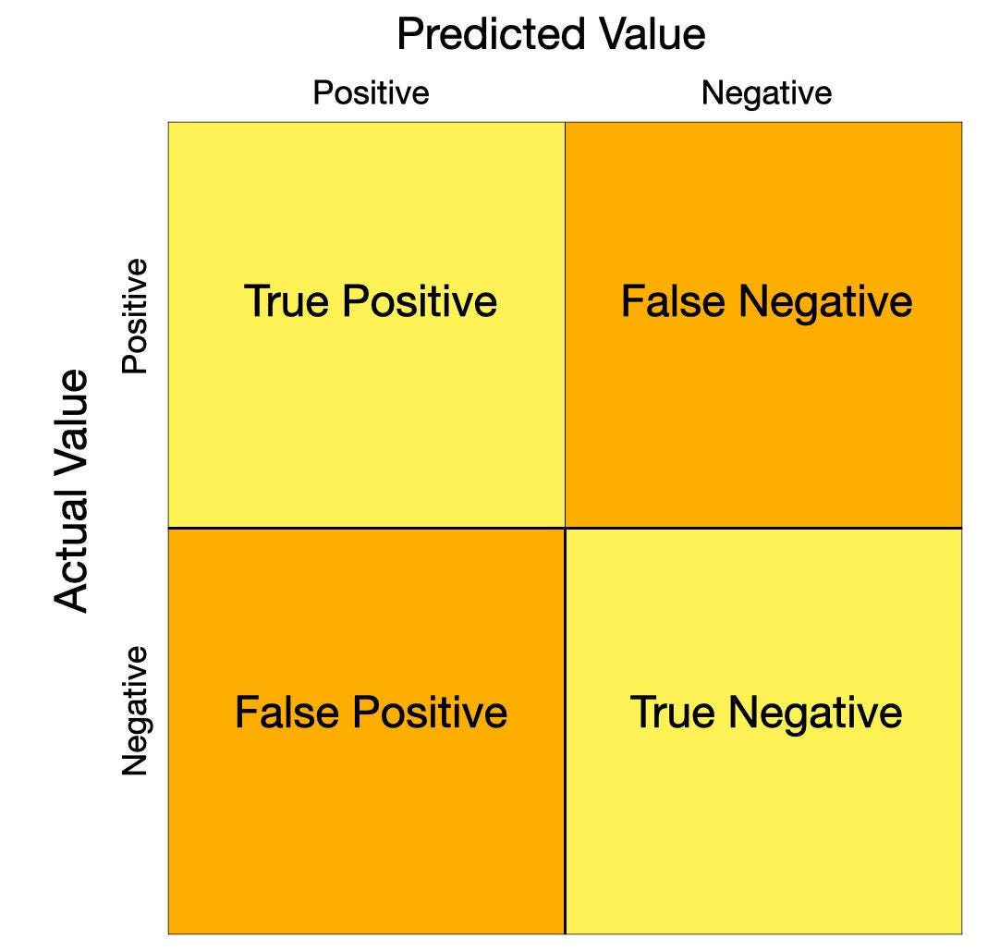
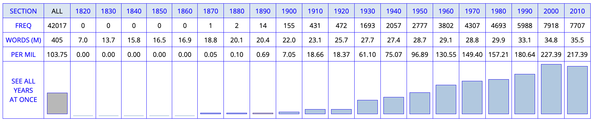
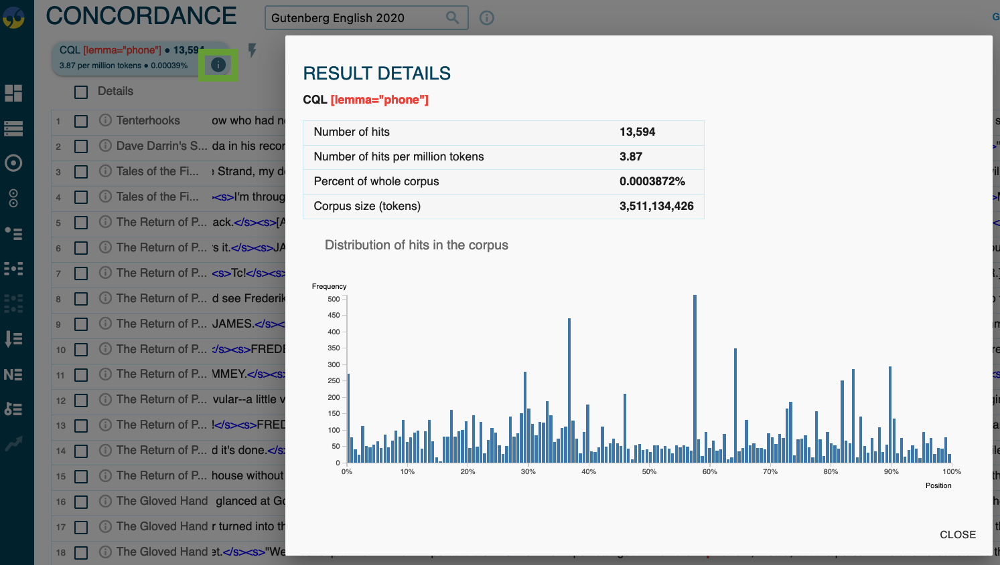

Analysing Data
Seminar ‘Methods in Linguistics’
July 16, 2025
Introduction
Session Overview
- First half:
- Statistical concepts
- data organisation
- Second half: Practical analysis with Excel and corpus tools
Learning Objectives
- Understand basic statistical concepts for linguistic research
- Learn principles of tidy data organisation
- Practice data analysis using Microsoft Excel
- Apply statistical methods to corpus data
Descriptive vs. Inferential Statistics
Descriptive vs. Inferential Statistics
Descriptive Statistics
Definition: Summarise and organise characteristics of a data set
Linguistic Example:
- Number of requests made by males vs. females in conversations
- Average, range, most common number of requests
Excel Functions:
AVERAGE,COUNT,MIN,MAX,STDEV.S,VAR.S
Inferential Statistics
Definition: Use sample data to make inferences about populations
Linguistic Example: - Test if there’s a significant difference in requests between males and females - Use sample data to infer about broader population patterns
Excel Tools:
- Data Analysis add-in, t-Tests, ANOVA, regression analysis
Normal Distribution and Standard Deviation
Normal Distribution
Normal Distribution
Definition: Symmetric probability distribution around the mean (bell curve)
Linguistic Examples:
- Word frequencies in large corpora
- Sentence length distributions
- Response times in psycholinguistic experiments
Key Properties:
- 68% of data within ±1 standard deviation
- 95% of data within ±2 standard deviations
- 99.7% of data within ±3 standard deviations
Variance and Standard Deviation
Variance: Measure of spread from the mean
Standard Deviation: Square root of variance, in same units as data
Mathematical Formula:
\[\text{Variance} = \frac{\sum_{i=1}^{n} (x_i - \bar{x})^2}{n}\]
Where: \(x_i\) = individual data points; \(\bar{x}\) = mean of the data; \(n\) = number of observations.
Excel Functions:
- Population:
VAR.P,STDEV.P - Sample:
VAR.S,STDEV.S
Linguistic Application: Measuring variability in word frequencies across different text types
Measures of Central Tendency
Measures of Central Tendency
Mean, Median, Mode
Example: Sentence lengths: 8, 8, 10, 12, 35
Mean: Average value
- Result: 14.6 words
- Sensitive to outliers
Median: Middle value in ordered set
- Result: 10 words
- Robust to outliers
Mode: Most frequent value
- Result: 8 words
- Shows most common pattern
When to Use Each Measure
- Mean: When data is normally distributed
- Median: When data has outliers or is skewed
- Mode: For categorical data or identifying common patterns
Significance Testing
Key Concepts
- Null Hypothesis (H₀): No effect or difference exists
- Alternative Hypothesis (H₁): Effect or difference exists
- p-value: Probability of observing data if H₀ is true
Linguistic Examples:
- H₀: No difference in request frequency between male and female speakers
- H₁: Female speakers use more requests than male speakers
- H₀: No correlation between text length and lexical diversity
- H₁: Longer texts have higher lexical diversity scores
- H₀: No difference in word length between formal and informal registers
- H₁: Formal registers contain longer words than informal registers
Conventional Decision Rules:
- p ≤ 0.05: Reject H₀ (significant result)
- p > 0.05: Fail to reject H₀
Danger: “p-hacking”
Excel Statistical Functions
T.TEST()
- Purpose: Compare means between two groups
- Linguistic Applications:
- Compare word lengths between corpora
- Analyse sentence complexity across genres
- Evaluate grammatical structure frequencies
- Syntax:
=T.TEST(array1, array2, tails, type)
CHISQ.TEST()
- Purpose: Test independence between categorical variables
- Linguistic Applications:
- Parts of speech distribution across genres
- Text type vs. linguistic feature relationships
- Syntax:
=CHISQ.TEST(observed_range, expected_range)
True and False Positives
Confusion Matrix
Example: Searching for sentences containing requests
- True Positive (TP): Query correctly identifies a request
- False Positive (FP): Query incorrectly identifies non-request as request
- True Negative (TN): Query correctly identifies non-request
- False Negative (FN): Query misses a real request
Evaluation Metrics
- Accuracy:
- Overall correctness
- \(\frac{TP + TN}{TP + TN + FP + FN}\)
- Precision:
- How many identified items are correct
- \(\frac{TP}{TP + FP}\)
- Recall:
- How many actual items were found
- \(\frac{TP}{TP + FN}\)
- F1-Score:
- Harmonic mean of precision and recall
- \(2 * \frac{Precision * Recall}{Precision + Recall}\)
Frequency Measures
Absolute vs. Relative Frequency
- Absolute Frequency: Raw count of occurrences
- Relative Frequency: Per million words (normalised)
Corpus Platform Examples
English-Corpora.org
COHA Query Results
FREQ: Absolute frequencyWORDS (M): Corpus size in millionsPER MIL: Relative frequency per million words
Sketch Engine
Gutenberg Query Results
Number of hits: Absolute frequencyNumber of hits per million tokens: Relative frequency
Tidy Data Principles
Hadley Wickham’s Tidy Data Rules
- Each observation forms a row
- Every single observation in a different row
- Each variable forms a column
- Clear visibility and easy manipulation
- Each type of observational unit forms a table
- Different units in different sheets/tables
- Column names should be descriptive
- Clear, informative headers
- Store metadata separately
- Data collection process, coding guides
- Avoid wide format, favour long format
- More rows, fewer columns
- DRY: Don’t Repeat Yourself
- Use pivot tables, avoid duplication
Excel Best Practices
Organisational Tips
- Use new tabs for analyses (keep raw data separate)
- Create tables for structured data
- Use pivot tables for powerful analysis
- Create pivot charts for visualisation
Pivot Chart Example
Data Management
- Backup your raw data
- Document your analysis steps
- Use formulas instead of manual calculations
- Validate your data entry
Practice: Shortening Analysis
Research Context
(Hilpert, Correia Saavedra, and Rains 2023)

Hilpert’s Clipping Analysis
Background: Analysing clipping patterns in English: source words (e.g., brother) and clipped forms (e.g., bro)
Research Question: How do clipping pairs vary in frequency of use (across text types) and in terms of meaning?
Overview
- Extract a set of clippings from the OED.
- Analyse their morphological features in Excel.
- Study their overall frequency using Sketch Engine.
1. Retrieving clippings from the OED
- use
Advanced Search - order by
Date (newest first) - export as
csv
2. Analyse their morphological features in Excel
Model sheet: https://1drv.ms/x/c/9a2ec97d593520f9/Ebpx8y_9sQZMjoL7cr0egkABLIrmcgPCLjOcoKRA7yIZ7Q
- Most frequent word classes?
- Most frequent word-formation types?
- Distribution across date of use?
- Distribution across subjects?
3. Study their overall frequency using Sketch Engine
Model sheet: https://1drv.ms/x/c/9a2ec97d593520f9/EfKdCQluHJZEimPLisZGKTwBN3QH-kLcXyDCfzC0CRk5DQ
Basic frequency measures:
- absolute frequency
- relative frequency
Frequency distribution across:
- Genre
- Topic
Key Takeaways
Statistical Foundations
- Descriptive statistics summarise your data
- Inferential statistics test hypotheses
- Normal distribution provides baseline expectations
- Central tendency measures capture typical values
Data Organisation
- Tidy data principles enable efficient analysis
- Excel tools support powerful visualisation
- Documentation ensures reproducibility
Research Applications
- Corpus linguistics benefits from statistical analysis
- Frequency measures reveal usage patterns
- Significance testing validates findings